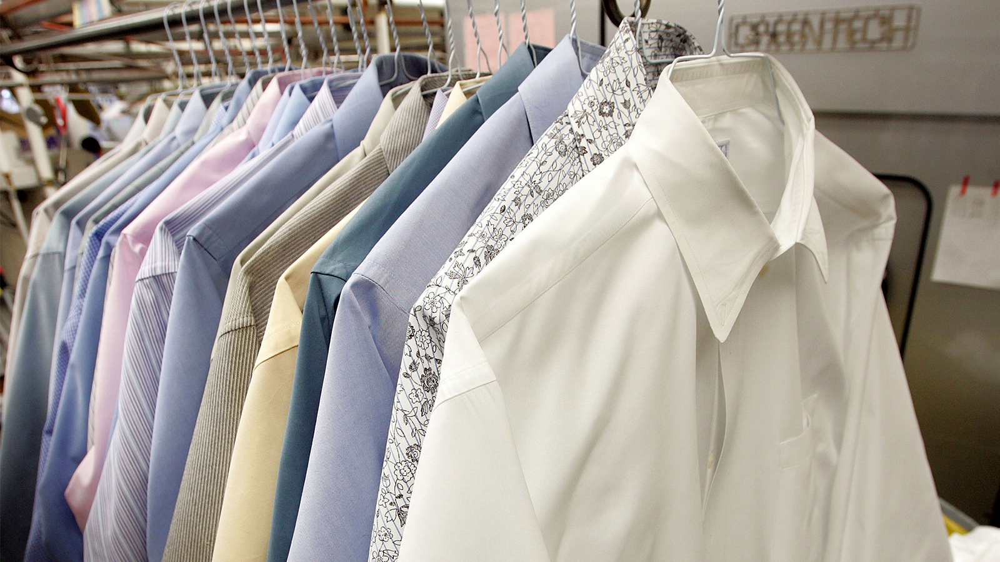

{% extends 'base.html' %}
{% load static %}
{% block content %}
Services We Provide:
Stain Removal - Price: $1.50 per unit
We will remove all stains from the product

Full Service Dry Cleaning - Price: $3.50 per unit
With our full service dry cleaning, your clothes will never be cleaner! Includes stain removal.

Full Service Dry Cleaning With Delivery - Price: $6.50 per unit
The same as our normal full service dry cleaning, except we will deliver your clothes to you once they are done at a convenient time to you!

Specialized Dry Cleaning - Price: $9.50 per unit
For materials that require extra care such as leather, suede, fur or wedding dresses, please select this service.

{% endblock %}